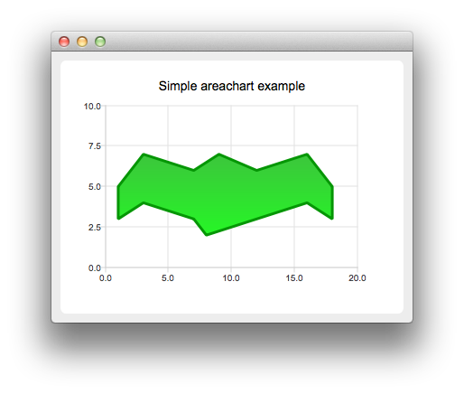

Creating Area Charts
Note: This is part of the Charts with Widgets Gallery example.

To create area charts, we need two QLineSeries instances. They are going to define the upper and lower boundary of the area.
auto series0 = new QLineSeries; auto series1 = new QLineSeries;
We add data to both series and use the stream operator.
*series0 << QPointF(1, 5) << QPointF(3, 7) << QPointF(7, 6) << QPointF(9, 7) << QPointF(12, 6) << QPointF(16, 7) << QPointF(18, 5); *series1 << QPointF(1, 3) << QPointF(3, 4) << QPointF(7, 3) << QPointF(8, 2) << QPointF(12, 3) << QPointF(16, 4) << QPointF(18, 3);
Now we create a QAreaSeries instance using two line series objects. We set the custom gradient fill and width of the outline.
auto series = new QAreaSeries(series0, series1); series->setName("Batman"); QPen pen(0x059605); pen.setWidth(3); series->setPen(pen); QLinearGradient gradient(QPointF(0, 0), QPointF(0, 1)); gradient.setColorAt(0.0, 0x3cc63c); gradient.setColorAt(1.0, 0x26f626); gradient.setCoordinateMode(QGradient::ObjectBoundingMode); series->setBrush(gradient);
Last we create the QChartView instance, set the title, set anti-aliasing, and add the area series. We also create the default axes and specify the ranges on them.
auto chart = new QChart; chart->addSeries(series); chart->setTitle("Simple Area Chart"); chart->createDefaultAxes(); chart->axes(Qt::Horizontal).first()->setRange(0, 20); chart->axes(Qt::Vertical).first()->setRange(0, 10);
The chart is ready to be shown.
createDefaultChartView(chart);